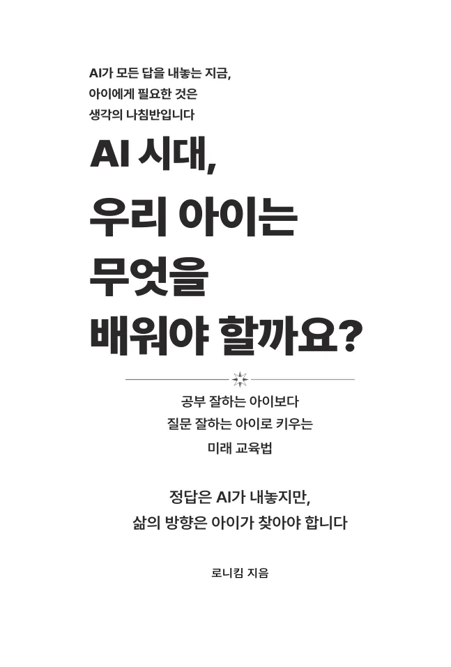
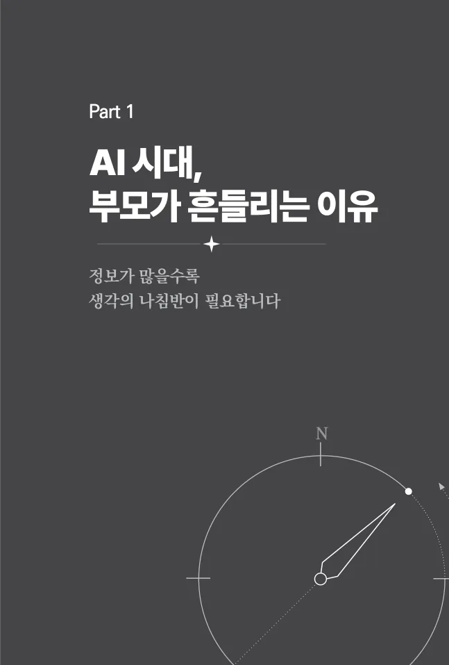
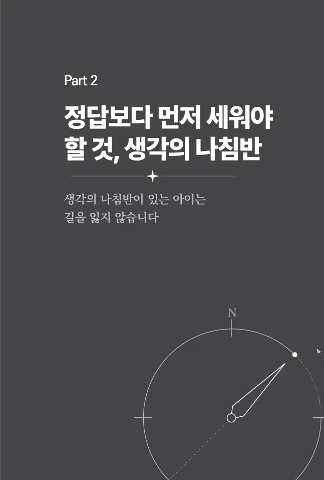
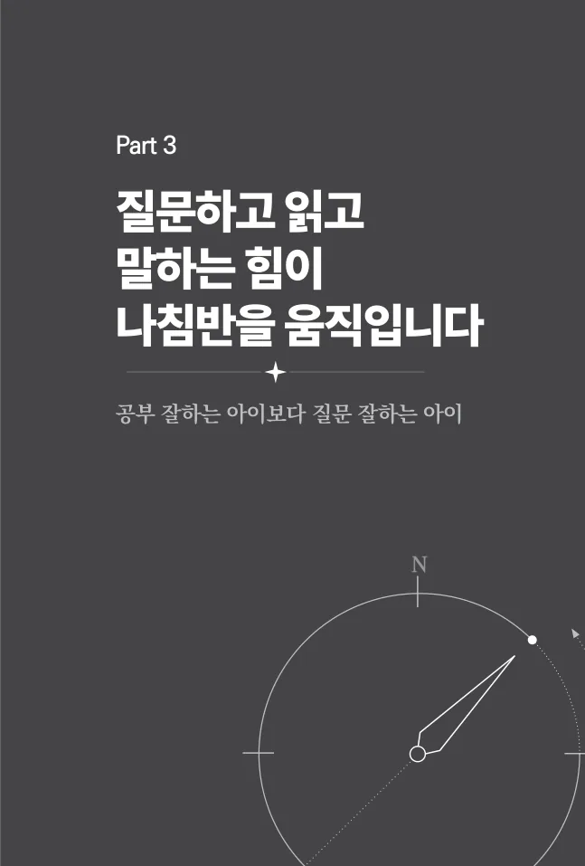
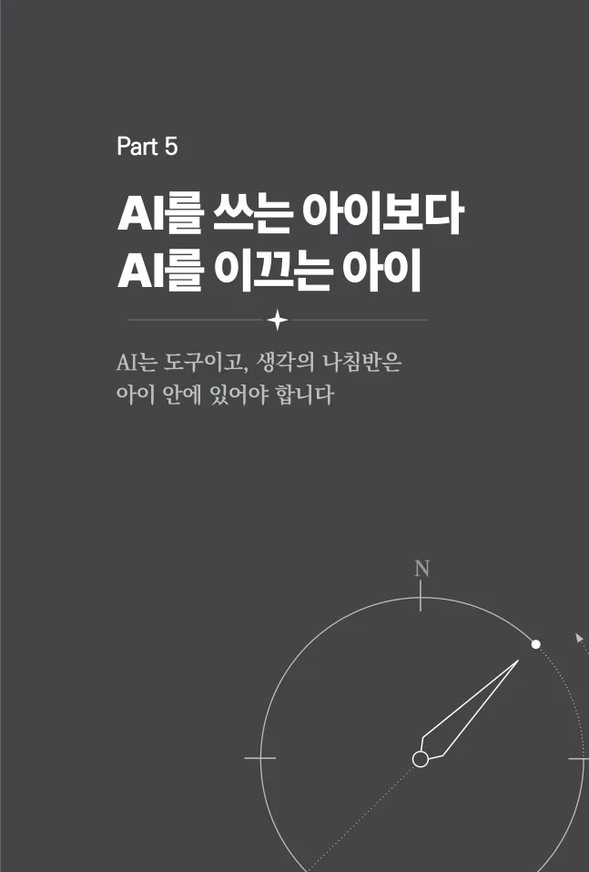
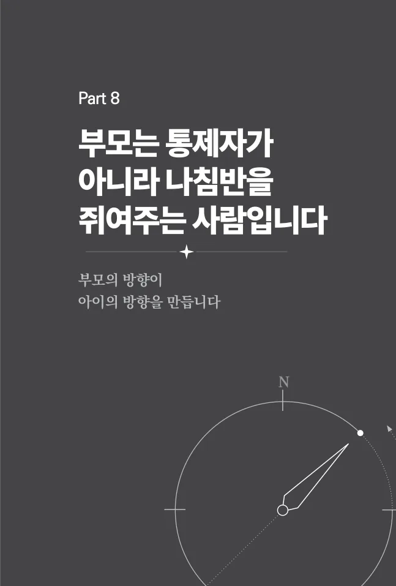

샘플 본문
책의 메시지와 편집 구성을 확인할 수 있도록 표제면과 Part 시작 페이지를 중심으로 일부 페이지를 제공합니다.
본문 미리보기






프롤로그에서
저자는 AI와 교육 정보가 넘치는 시대에 부모가 계속 “무엇을 더 시켜야 할까”만 묻고 있지는 않은지 돌아봅니다. 코딩, 영어, 문해력, AI 활용 중 하나의 정답을 고르는 대신, “이 선택이 아이를 스스로 생각하는 사람으로 만드는가”라는 질문을 제시합니다.
이 책에서 말하는 생각의 나침반은 흔들리지 않는 완벽한 확신이 아니라, 흔들린 뒤에도 자기 방향으로 다시 돌아올 수 있게 하는 기준입니다.